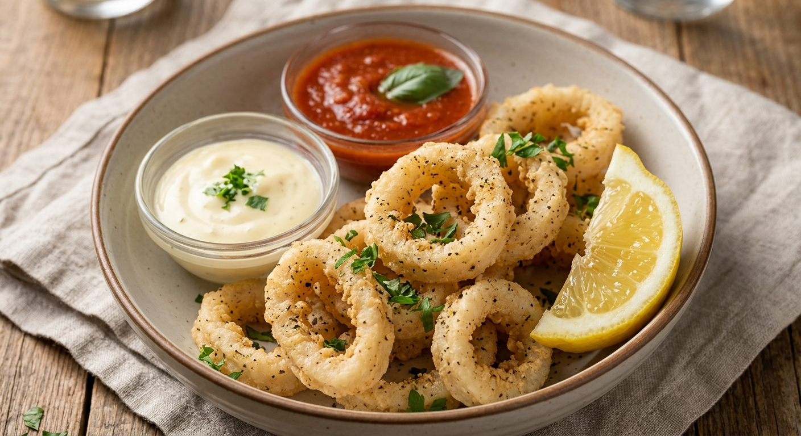
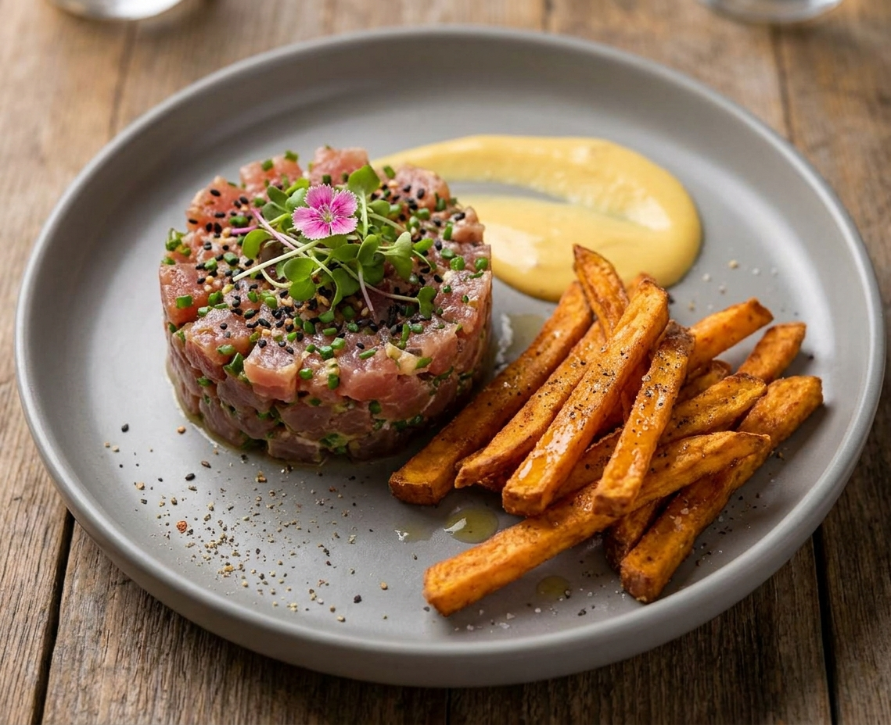

Calamari
Crispy, golden-brown rings of tender squid lightly dusted in seasoned flour and flash-fried to perfection.
Served hot with a zesty garlic aioli or marinara sauce and a wedge of fresh lemon, it offers a wonderful contrast of a crunchy exterior and a tender, delicate bite.

Green Mango Salad
A refreshing and vibrant local salad featuring crisp, diced green mangoes tossed with juicy diced tomatoes and a wedge of fresh lime, generously topped with savory, sweetened shrimp paste for an irresistible balance of tart, sweet, and umami flavors.

Tuna Tartare
Freshly diced, high-grade raw tuna seasoned with savory aromatics and delicate herbs, topped with sesame seeds and micro greens, served alongside a rich sauce smear and crispy, golden-brown fried sweet potato strips.